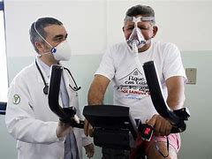

É inegável o impacto econômico e social que a doença do coronavírus-19 (COVID-19) pode trazer, uma vez que elevados contingentes de trabalhadores ativos da produção e prestação de serviços estão sendo contaminados. Além disso, os infectados podem apresentar sequelas a longo prazo, prejudicando sua capacidade funcional e, consequentemente, as atividades laborais. Este artigo analisou as repercussões da COVID-19 sobre a saúde do trabalhador, enfatizando a importância da fisioterapia na recuperação dos infectados. Trata-se de uma revisão integrativa da literatura, realizada nas bases de dados eletrônicos PubMed, SciELO e LILACS, utilizando os descritores: COVID-19, fisioterapia, reabilitação e saúde do trabalhador. Dos 1.308 estudos encontrados, apenas 15 se enquadraram nos critérios de inclusão.